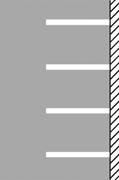
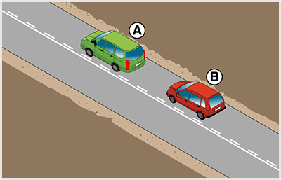

- 216. Mi az útburkolati jel jelentése? #703805
- ’Kerékpárosok közlekedésére kijelölt úttest’
- ’Várakozóhely kerékpárosok részére’
- ’Előretolt kerékpáros felállóhely’

- 217. Mit nem szabad az alábbiak közül ennél az útburkolati jelnél csinálni? #703806
- Járművel folyamatosan ezen az útburkolati jelen haladni.
- Másik járművet ezt az útburkolati jelet átlépve kikerülni.
- Kerékpárost ezt az útburkolati jelet átlépve megelőzni.

- 218. Mi az útburkolati jel jelentése? #703807
- ’Utat keresztező kerékpárút’
- ’Kötelező megállás’
- ’Előretolt kerékpáros felállóhely’

- 219. Várakozhat-e ennél az útburkolati jelnél két vonal között két egy nyomon haladó jármű egyszerre? #703808
- Igen.
- Nem.

- 220. Ezen az ’X’ jelű útburkolati jelen... #703809
- járművéből az utasa kiszállhat.
- 3 percre elhagyhatja járművét.
- az ott lakók engedélyével várakozhat is.

- 221. Megelőzheti-e a ’B’ jelű gépkocsi az ’A’ jelű gépkocsit az ábrán látható helyen? #703958
- Igen, amennyiben az előzés feltételei adottak.
- Nem, mert ez az útburkolati jel is záróvonalnak felel meg, amin nem szabad áthajtani.

- 222. Ezen a sárga színű útburkolati jelen... #704152
- szabad áthajtani.
- nem szabad áthajtani.
- csak megállni szabad.

- 223. Átlépheti-e ezt az útburkolati jelet előzés céljából? #704153
- A záróvonal felől nem, a terelővonal felől viszont igen.
- A záróvonal felől igen, a terelővonal felől viszont nem.
- Igen, bármelyik irányból.
- 224. Megfordulhat-e ezen az útburkolati jelen? #704154
- Csak a terelővonal felől.
- Igen, akár a terelővonal, akár a záróvonal felől.
- Nem, mivel csak előzés céljából lépheti át ezt az útburkolati jelet.

- 225. Mit jelent az ábrán látható sárga útburkolati jel? #704156
- ’Veszélyes hely előjelzése’.
- ’Merőleges várakozóhelyek’.
- ’Kerékpározni tilos’.

- 226. Mire figyelmezteti Önt ez a sárga útburkolati jel? #715064
- Az úttest lezárása miatt megváltozott forgalmi rendre.
- A menetrend szerint közlekedő járművek terelő útirányára.
- Arra, hogy kerékpárosok keresztezhetik a forgalmi sávot.

- 227. Mit jelez ez az útburkolati jel? #715065
- Előretolt kerékpáros felállóhelyet.
- Kerékpáros közvetett kapcsolatot.
- Kerékpársáv végét.

- 228. Előzhet-e úgy, hogy közben átlépi ezt az útburkolati jelet? #715066
- Nem.
- Igen, ha nincs kihelyezve ’Előzni tilos’ jelzőtábla.
- Igen, ha kerékpárost előz.
- 229. A járda szegélyére folytonos sárga vonalat festettek fel. Mire figyelmezteti Önt ez az útburkolati jel? #715070
- Megállási tilalomra.
- Arra, hogy a kerékpárosok a járdán közlekednek.
- Mozgássérült várakozóhelyre.
- Várakozási tilalomra.
- 230. Közlekedhet-e kerékpáron kívül más jármű is a ’Kerékpáros nyom’ útburkolati jellel megjelölt úttest részen? #715071
- Igen.
- Nem.
- 231. Ön az ’A’ jelű személygépkocsit vezeti. Mire kell számítania az úton, ha ezt az útburkolati jelet látja? #715601
- Sebességkorlátozásra vagy megállási kötelezettségre.
- Az utat keresztező vasúti átjáróra vagy villamospályára.
- Sebességmérő rendszerre.
- 232. Az ábrán látható sárga útburkolati jelet látva kötelesek-e az érkező járművek csökkenteni a sebességüket? #715602
- Nem, de érdemes felkészülni arra, hogy az úton hamarosan sebességkorlátozás lesz, vagy megállási kötelezettsége keletkezik.
- Igen, lakott területen max. 30, lakott területen kívül max. 60 km/h sebességgel közlekedhet az útburkolati jel kezdetétől.
- 233. Útkereszteződésben jobbra kíván kanyarodni. Eközben a... #721947
- jobbra bekanyarodást a nyitott kerékpársávról kell végrehajtani
- jobbra bekanyarodást a nyitott kerékpársáv melletti forgalmi sávból kell végrehajtania.

- 234. Mit jelez ez az útburkolati jel? #724151
- A forgalmi sávot a jelzett irányban el kell hagyni.
- Az útkereszteződés előtt félre kell állni.
- A ferdén becsatlakozó úton egyirányú forgalom van.